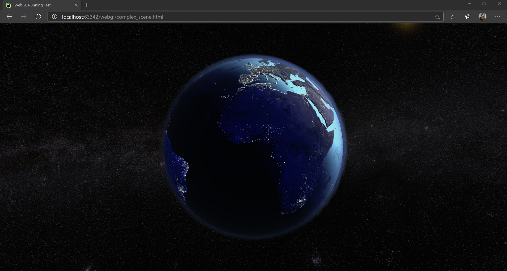
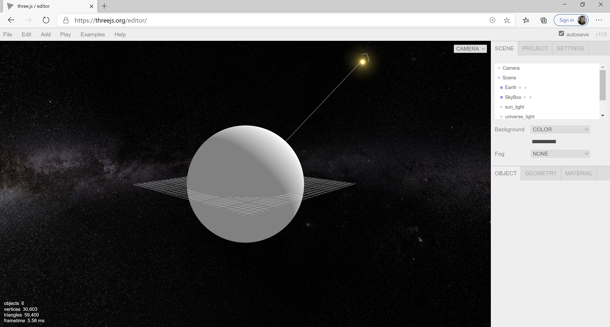
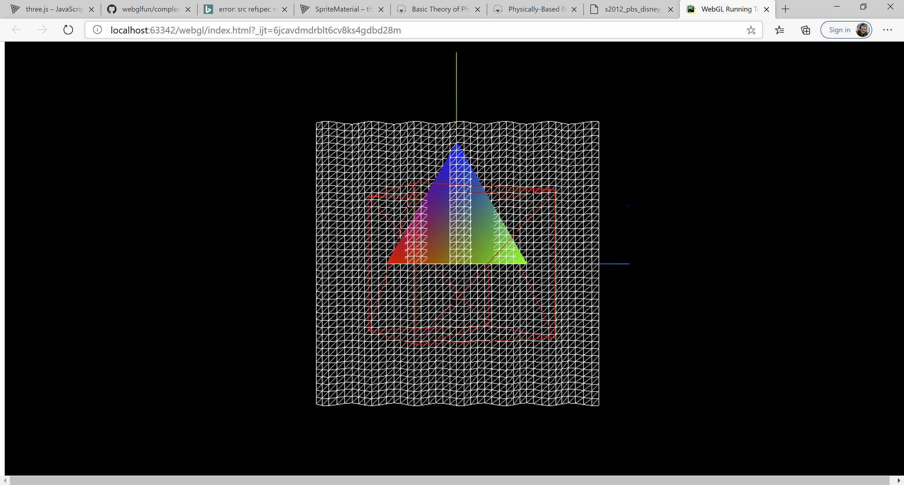
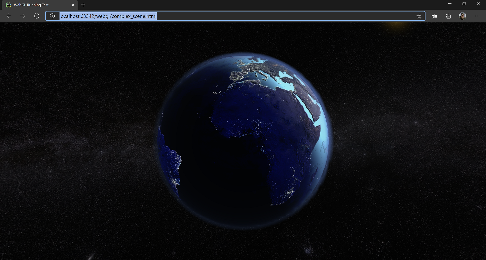
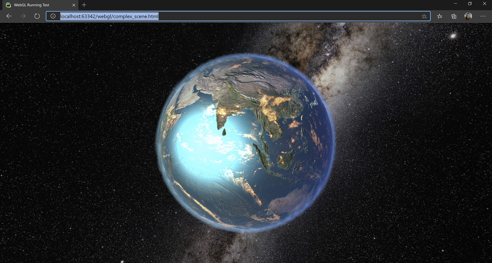
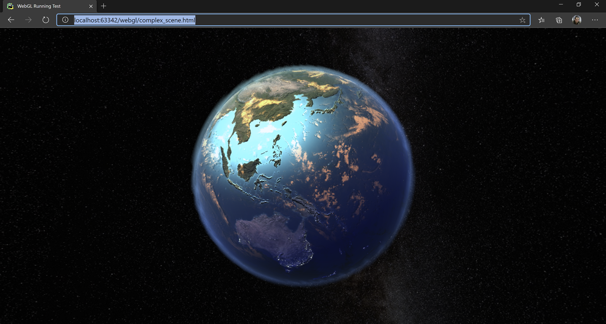

WebGL Fun
A post about computer graphics, for the web mostly, with JavaScript, WebGL, ThreeJS and shaders. A little bit of maths also.
ThreeJS Introduction
ThreeJS is a minimalistic 3D game engine for the web, with a very simple to use and very nicely designed API. It comes in the form of a javascript library, accompanied by a set of util libraries, a scene editor running on the web and lots and lots of examples an tutorials.
By the end of this blog post we will build this:

By default, ThreeJS already has built in materials for most of the effects one might want to add to a scene. I addition to what is already built in, there are lots of samples and pre-made effects in the form of libraries on github. Therefore, for most work, it be used entirely from JavaScript. While the API is clean and short and performs as expected, a little bit of maths and graphics background will still be needed sooner or later in the project.

Initialization and The First Scene
The simplest way to run ThreeJS is to cover the full browser window. It goes like this:
<html>
<head>
<!-- Run everything as a module -->
<script type="module">
import {main, resize} from "./js/complex_scene.js";
window.onload = main;
window.onresize = resize;
</script>
</head>
<body>
<!-- Full screen, positioned top-left corner -->
<div id="webgl-container" style="position: absolute; top: 0; left:0 ; margin: 0"></div>
</body>
</html>
Then, in the JavaScript file:
// downloaded beforehand in the libs folder
import * as THREE from "./libs/three.module.js"
// create new renderer
const renderer = new THREE.WebGLRenderer();
// util for variable frame rate
const clock = new THREE.Clock(true);
We are also going to make use of the following two functions, as vectors are kept by reference in the ThreeJS code and, in many cases, we need copies to do transforms only on resulting vector, not on the source.
function newVector(v){
return new THREE.Vector3(v.x, v.y, v.z);
}
function copyVector(dest, src){
dest.x = src.x;
dest.y = src.y;
dest.z = src.z;
}
Now we can proceed further to initialization
function resize() {
renderer.setSize(window.innerWidth, window.innerHeight);
if(camera != null) {
camera.aspect = window.innerWidth / window.innerHeight;
camera.updateProjectionMatrix(); // DON'T FORGET!
}
}
async function main() {
// initialize the renderer
renderer.setSize(window.innerWidth, window.innerHeight);
document.getElementById("webgl-container").appendChild(renderer.domElement);
// [LOAD SCENE HERE]
// for the first demo will we create scene programatically,
// for the second we load the scene as exported from the ThreeJS editor
// if objects are loaded from the network, initScene should be async / awaited
initScene();
renderScene();
}
export { main, resize }
We are also going to use the following global variables:
// the scene object
const scene = new THREE.Scene();
// a light, must be added to the scene if we want to see something
const light = new THREE.AmbientLight(0xffffff);
// a camera
let camera = null;
Initialize them, add them to the scene:
function initScene(){
// 1. create the renderer and add its element to the scene
renderer.setSize(window.innerWidth, window.innerHeight);
document.getElementById("webgl-container").appendChild(renderer.domElement);
// 2. create the camera, position it in the world and add it to the scene
camera = new THREE.PerspectiveCamera(35, window.innerWidth/window.innerHeight, 1, 1000);
camera.position.z = 100;
scene.add(camera);
// 3. add the light to the scene
scene.add(light);
// 4. Create an object. An object an item of the class THREE.Mesh()
// It has two constituents: a geometry and a material
// The geometry is created from the library of predefined geometries.
// Check the docs for other prefedined geometries
// The material is a single color (red) material, rendered in wireframe
// wireframe property is set in the constructor.
// ThreeJS predefines many materials for everyday use.
let box = new THREE.Mesh(
new THREE.BoxGeometry(20, 20, 20),
new THREE.MeshBasicMaterial(
{
color: 0xff0000,
wireframe: true
})
);
// 5. Give a name to my 3D object so we can find it in the scene later
box.name = "my-box";
// 6. A super useful helper for debugging, the AxesHelper, shows the orientation of my 3D object.
// This is added as a child to the box so it moves through the scene together with its parent.
box.add(new THREE.AxesHelper(30));
// 7. Add the box to the scene
scene.add(box);
// the next two objects will be detailed later
// (a) how to create geometry programatically
// (b) how to modify geometry programatically
scene.add(createTriangleGeometry(20, false));
scene.add(new AnimatedPlaneGeometry());
}
Beside the THREE.MeshBasicMaterial shown above, which is a flat renderer, not affected by lights, ThreeJS comes with a powerful material library. Some of the classes discussed below:
LineMaterial- allows drawing linesLineDashMaterial- allows drawing dashed linesMeshLambertMaterial- basic per-vertex lighting, no specularMeshPhongMaterial- per-pixel lighting, specular. Offers interesting properties for setting the diffuse texture, environment map, emissive, displacement map, bump map, light map, normal map, both object space and tangent space, etc.MeshToonMaterial- toon shadingMeshStandardMaterial- physically-based rendering materialSpriteMaterial- rendering spritesDepthMaterial- for rendering the depth bufferShaderMaterial- for custom shaders written in GLSL. We will use this material later on.
The wide slection of materials available means that a lot can be done with just JavaScript, without touching any advanced rendering techniques or limiting custom rendering code to very special sections of your scene.
Redering the scene is super easy as well:
function render(){
// 1. optinally call an update method
// to update your scene based on the advance of time
update(clock.getDelta())
// 2. render the scene
renderer.render(scene, camera);
requestAnimationFrame(render);
}
Fun With Vertices
We mentioned two more objects in the scene initialization code above:
- Generating geometry
- Updating geometry
Here it is how it goes:
function createTriangleGeometry(size, singleColor = false){
// 1. Create a geometry object and push some vertices to it.
// In this case we create a triangle
let geom = new THREE.Geometry();
geom.vertices.push(new THREE.Vector3(-size * 0.5, 0, 0));
geom.vertices.push(new THREE.Vector3(size * 0.5, 0, 0));
geom.vertices.push(new THREE.Vector3(0, Math.sqrt((3.0 / 4.0) * size * size )), 0);
// 2. Set the indexes for each triangle constituting the geometry
// In our case, we have a single face since we draw a single triangle
// ThreeJS uses indexed geometries.
geom.faces.push(new THREE.Face3(0, 1, 2));
let mat = null;
// 3. Set the material properties
// in the `else` case we setup vertex colors which will be sent to the shaders as
// vertex color parameters.
if (singleColor) {
mat = new THREE.MeshBasicMaterial({color: 0x00ff00});
}
else{
mat = new THREE.MeshBasicMaterial({
side: THREE.DoubleSide,
vertexColors: THREE.VertexColors
})
geom.faces[0].vertexColors[0] = new THREE.Color(0xff0000);
geom.faces[0].vertexColors[1] = new THREE.Color(0x00ff00);
geom.faces[0].vertexColors[2] = new THREE.Color(0x0000ff);
}
// 4. Return the mesh that can be added to the Scene
return new THREE.Mesh(geom, mat);
// 5. Check out ExtrudeGeometry and ShapeGeometry and GeometryUtils
// for different means and utilities for generating geometry in code
}
And updating geometry on the fly:
class AnimatedPlaneGeometry extends THREE.Mesh{
constructor() {
// 1. initialize this geomerty as a plane
super(new THREE.PlaneGeometry(40, 40, 40, 40),
new THREE.MeshBasicMaterial({wireframe: true})) ;
// 2. give it a name so it can be accessed from the scene
this.name = "my-wave";
}
update(dt){
// 3. update the geometry, this is a sinosoidal wave
for(let i = 0; i < this.geometry.vertices.length; i++){
this.geometry.vertices[i].z = Math.sin(this.geometry.vertices[i].x + 0.05 * dt)
}
// 4.: must call the following to update the geometry.
// otherwise the buffers will not be updated
this.geometry.verticesNeedUpdate = true;
}
}
If all went well, with an update function like the following,
function update(dt){
let box = scene.getObjectByName("my-box");
box.rotation.y += 0.1 * dt;
let wave = scene.getObjectByName("my-wave");
wave.update(dt);
}
Something like the following scene should appear in the browser. The full code is in my github account, in the WebGL project.

The scene contains:
- The red wireframe cube rotating (my-box) with the AxesHelper added and rotating with its parent.
- The waving plane, updated geometry (my-wave).
- The colorful triangle created on the fly.
Shaders and Rendering Of The Earth
Why the Earth? Because textures can be found free online, because rendering it requires some specific techniques, like skyboxes, normal mapping, lighting, atmosphere rendering and because the result is guaranteed to be beautiful.
A very good rendering of the Earth can be obtained by using materials already provided by the engine or by the community. However, since this was a pet project, we are doing many things from scratch. Also, being a pet project written among other things, the code is not production ready. I have not tested it on other computer except for my laptop which is quite powerful. Also, I have not optimized the code. It's just the first thing that worked.
Loading the Scene
Unlike the previous example where we built the scene manually, here I created it in the ThreeJS editor and then exported it. The loading code goes like this:
async function main() {
//1. initialize the renderer
renderer.setSize(window.innerWidth, window.innerHeight);
document.getElementById("webgl-container").appendChild(renderer.domElement);
//2. load the scene from editor exported objects
scene = await loadObject("./assets/earth_and_water.json");
camera = await loadObject("./assets/camera.json");
//3. fix the camera, the camera has also been loaded from JSON, but its parameters
// neeed to be adjusted to our viewport
camera.aspect = window.innerWidth/window.innerHeight;
camera.updateProjectionMatrix();
camera.updateMatrixWorld();
//4. load the FlyControls library (premade) so we can move through the scene
cameraControls = new FlyControls(camera, renderer.domElement);
cameraControls.dragToLook = true;
cameraControls.movementSpeed = 4.0; // scene-units per second
cameraControls.rollSpeed = 0.1; // radians per second
//5. the skybox requires separate treatment, will be coved later in the post
// her we remove it from the scene
skybox = scene.getObjectByName('SkyBox');
scene.remove(skybox);
//6. we are also fixing the atmosphere and make it a child of the earth so the move together
earth = scene.getObjectByName("Earth");
atmosphere = scene.getObjectByName("Atmosphere");
scene.remove(atmosphere);
earth.add(atmosphere);
//7. setup the shaders
fixMaterials().then( () => {
// 8. since we have a skybox rendered as a separate step
// we don't want to renderer to erase the scene for us between rendering
// also part of the rendering of the skybox
renderer.autoClear = false;
scene.background = null;
// 9. start the renderign loop
render()
});
}
For loading the scene and the textures we are going to use two functions:
async function loadObject(json){
let objLoader = new THREE.ObjectLoader();
return new Promise( (accept, reject) => objLoader.load(json, accept, null ,reject));
}
async function loadTexture(texture){
let imgLoader = new THREE.TextureLoader();
return new Promise( (resolve, reject) => imgLoader.load(texture, (tex) => {
// here we are intercepting the texture loader
// we want the textures to be as beautifully rendered as possible at the cost of performance
// therefore, we use the highest anisotropy level the renderer provides
// for my device, it is 16
// this makes the textures look sharp when seen from the side
// https://en.wikipedia.org/wiki/Texture_filtering#Anisotropic_filtering
tex.anisotropy = renderer.capabilities.getMaxAnisotropy();
resolve(tex);
}, null, reject))
}
Setting up a shader is performed in the fixMaterials function. Its basic structure as as follows:
- Define the set of uniforms and bind them to JS variables. Uniforms are the variables that are set in code and submitted on each rendering pass to the shading programs.
- Create a
ShaderMaterial - Set the uniforms and then load the vertex shader and the pixel shaders. In our case, we store these in our DOM tree, in the html file.
Let's perform these steps to render the sky dome. In our case it's a sphere, not box.
SkyDome And Light
- Setting up the uniforms:
async function fixMaterials() {
// first is the SkyBox
skyBoxUniforms = {
diffuseTexture: {
type: "t",
value: await loadTexture("./assets/sky/sky_at_night.jpg")
},
}
[... more to come here ...]
- Create the
ShaderMaterial:
skybox.material = new THREE.ShaderMaterial({
// a) set the uniforms
uniforms: skyBoxUniforms,
// b) load the vertex and pixel shader from the HTML DOM
vertexShader: document.getElementById("skyBoxVertexShader").innerText,
fragmentShader: document.getElementById("skyBoxFragmentShader").innerText,
// c) set other parameters
// In our case, always show the skybox behind all other objects
depthTest : false,
depthWrite: false,
// d) we are always inside the box
side: THREE.BackSide,
});
Rendering the skybox is a bit trick as the following are done:
- The skybox is always as at the same distance from the camera. We don't get closer to it, we don't get further from it. It moves with the camera.
- The skybox is behind any object in the scene, it cannot intersect any object. Thus we don't update the the Z-buffer and we don't read from it. We render the skybox as a separate step and we don't erase the background between rendering the skybox and rendering the rest of the scene.
Here's how the rendering loop looks like:
function render(){
// 1. update the scene, geometries, etc
update(clock.getDelta())
// 2. clear the background
renderer.clear();
// 3. render the skybox
if(skybox != null){
renderer.render(skybox, camera);
}
// 4. without clearing the background, render the rest of the scene
renderer.render(scene, camera);
requestAnimationFrame(render);
}
The shaders for the skybox are super straight forward, as we don't apply any lighting to it.
<script type="x-shader/x-vertex" id="skyBoxVertexShader">
uniform vec3 lightDirection;
uniform vec3 cameraDirection;
varying vec2 vUv; // pass the uv coordinates of each vertex to the frag shader
varying float lightIntensity;
void main()
{
vUv = uv;
gl_Position = projectionMatrix * modelViewMatrix * vec4(position, 1.0);
// artistic effect: dim when looking at the light source
// no special reason for the effect, just feel nicer
// it should be computed outside the shader
float i = dot(normalize(cameraDirection), normalize(lightDirection));
lightIntensity = clamp(i * i, 0.4, 1.0);
}
</script>
<script type="x-shader/x-fragment" id="skyBoxFragmentShader">
uniform sampler2D diffuseTexture;
varying vec2 vUv;
varying float lightIntensity;
void main()
{
gl_FragColor = texture2D(diffuseTexture, vUv) * lightIntensity;
}
</script>
Now, the trickery has not yet finished. We have a sun that needs to stick to the skybox when the skybox rotates and moves through the scene, remember it is bound to the camera, and we want to make sure the light direction is preserved and it accurately comes from the sun. So we do these updates in the update method.
function update(dt){
// 1. Allow the camera to move
if(cameraControls){
cameraControls.update(dt);
}
// 2. ensure the sun and the light have the same direction and they stick to the skybox
let sunLight = scene.getObjectByName('sun_light');
let sunSprite = scene.getObjectByName('sun_sprite');
let lightPos = sunLight.position.normalize();
let lightPosU = new THREE.Uniform(newVector(lightPos));
if(skybox) {
copyVector(skybox.position, camera.position);
skybox.rotation.x += 0.005 * dt;
skybox.rotation.y += -0.1 * dt;
let cameraDir = THREE.Vector3.prototype.setFromMatrixColumn(camera.matrixWorld, 2).normalize();
skyBoxUniforms.lightDirection = lightPosU;
skyBoxUniforms.cameraDirection = new THREE.Uniform(cameraDir);
skybox.updateMatrixWorld();
// keep the sun in the same place in the sky
if (sunSprite.originalPositionSkyboxSpace === undefined){
// the sun sprite
let invWorld = new THREE.Matrix4();
sunSprite.originalPositionSkyboxSpace = newVector(sunSprite.position);
sunSprite.originalPositionSkyboxSpace.applyMatrix4(invWorld.getInverse(skybox.matrixWorld));
sunSprite.originalSkyboxPosition = newVector(skybox.position);
}
// make sure the light comes from the sun and not some random point
let newPos = newVector(sunSprite.originalPositionSkyboxSpace);
newPos.applyMatrix4(skybox.matrixWorld);
copyVector(sunSprite.position, newPos);
sunSprite.updateMatrixWorld();
lightPos = new THREE.Vector3();
let skyboxMovement = new THREE.Vector3();
skyboxMovement.subVectors(skybox.position, sunSprite.originalSkyboxPosition);
lightPos.subVectors(sunSprite.position, skyboxMovement);
copyVector(sunLight.position, lightPos);
}
Rendering the Earth
Now, rendering of the Earth and its atmosphere can vastly be improved, especially perfomance-wise. But I am running out of vacation time and I really want to finish this project today so I stop at the current implementation. Some quick wins:
- Make lighting done in tangent space. It will reduce some matrix multiplications in the pixel shader.
- Make the atmosphere rendering per-pixel. Now the atmosphere thickness is computed per vertex and this gives some ugly artefacts.
- Tune the clouds and their shadows. While the shadow moves correctly with the camera, when they are brightly lit or when they are not fully lit there are some visual artefacts.
But let's start with the Earth.
// 1. setup the uniforms, load the textures
earthUniforms = {
diffuseTexture: {
type: "t",
value: await loadTexture("./assets/earth/earth_diffuse.jpg")
},
diffuseNight: {
type: "t",
value: await loadTexture("./assets/earth/earth_diffuse_night.jpg")
},
normalMap: {
type: "t",
value: await loadTexture("./assets/earth/earth_normal_map.png")
},
specularMap: {
type: "t",
value: await loadTexture( "./assets/earth/earth_specular_map.png")
},
cloudsMap: {
type: "t",
value: await loadTexture( "./assets/earth/clouds1.jpg")
}
}
// 2. Cheat a bit and use a library function to compute the tangets
// We will be using tangent-space normal mapping. The function was too easy to grab
// not to use it.
BufferGeometryUtils.computeTangents(earth.geometry);
// 3. setup the vertex shader and the fragment shader
earth.material = new THREE.ShaderMaterial({
uniforms: earthUniforms,
vertexShader: document.getElementById("earthVertexShader").innerText,
fragmentShader: document.getElementById("earthFragmentShader").innerText,
side: THREE.FrontSide
});
In the update function, we also update the position and we bind the updated light position to the shader:
function update(dt){
[....]
if(earth){
earthUniforms.lightDirection = lightPosU;
earth.rotation.x -= 0.001 * dt; // some rotation
earth.rotation.y += 0.05 * dt;
}
}
And the shaders, with comments:
<script type="x-shader/x-vertex" id="earthVertexShader">
uniform vec3 lightDirection;
// send to fragment shader
// all in eye space
varying vec2 vUv;
varying vec3 vEyeDirectionEyeSpace;
varying vec3 vLightDirection;
varying mat3 tbn;
// the tangent, sent per-vertex
attribute vec4 tangent;
void main(){
// 1. copy the texture coordinates
vUv = uv;
// 2. update the position
gl_Position = projectionMatrix * modelViewMatrix * vec4(position, 1.0);
// 3. compute the light direction from world to eye;
// should be computed outside of shader for performance
vLightDirection = mat3(viewMatrix) * lightDirection;
// 4. compute the direction to the eye
vEyeDirectionEyeSpace = mat3(viewMatrix) * normalize(position - cameraPosition).xyz;
// 5. prepare the tangent-bitangent-normal matrix for normal mapping
vec3 t = normalize(tangent.xyz);
vec3 n = normalize(normal.xyz);
vec3 b = normalize(cross(t, n));
// everything in eye space
t = normalize(normalMatrix * t);
b = normalize(normalMatrix * b);
n = normalize(normalMatrix * n);
tbn = mat3(t, b, n);
}
</script>
<script type="x-shader/x-fragment" id="earthFragmentShader">
// all my textures
uniform sampler2D diffuseTexture;
uniform sampler2D diffuseNight;
uniform sampler2D specularMap;
uniform sampler2D cloudsMap;
uniform sampler2D normalMap;
// inputs, interpolated per vertex
varying vec2 vUv;
varying vec3 vEyeDirectionEyeSpace;
varying vec3 vLightDirection;
varying mat3 tbn;
void main(){
vec3 lightDir = normalize(vLightDirection);
// 1. compute the normal based on the texture and bring it to eye space
vec3 n = texture2D(normalMap, vUv).xyz * 2.0 - 1.0;
vec3 normal = normalize(tbn * n);
// 2. directional light
float lightIntensity = dot(normal, lightDir);
// 3. use the surface normal, stored in tbn[2], as a selector for the day-night texture
// we don't do lighting per se, we use a blend of day/night textures for it
float selectImage = dot(tbn[2], lightDir);
gl_FragColor = texture2D(diffuseTexture, vUv) * selectImage + texture2D(diffuseNight, vUv) * (1.0-selectImage);
// 4. we light the pixels a bit, true, but we only use the remainer from the intensity-select,
// so we don't overlight
gl_FragColor *= (1.0 + 10.0*(lightIntensity - selectImage));
// 5. specular
vec3 reflection = reflect(lightDir, normal);
float specPower = texture2D(specularMap, vUv).r;
float spec = 4.0;
float gloss = 2.0 * texture2D(specularMap, vUv).a;
float specular = pow(clamp(dot(reflection, normalize(vEyeDirectionEyeSpace)), 0.0, 1.0), spec) * gloss;
gl_FragColor = gl_FragColor + specular * vec4(0.26, 0.96, 0.99, 1);
// 6. cloud colors
vec4 cloudsColor = texture2D(cloudsMap, vUv) * vec4(1.0, 0.5, 0.2, 1.0);
// 7. fake cloud shadow based on how we are looking at the cloud, to give some impression of depth
vec4 cloudsShadow = texture2D(cloudsMap, vec2(vUv.x + normal.x * 0.005, vUv.y + normal.y * 0.005));
if (cloudsColor.r < 0.1 && cloudsShadow.r > 0.1){
gl_FragColor *= 0.75;
cloudsShadow = vec4(0);
}
gl_FragColor = gl_FragColor * (vec4(1.0) - cloudsColor) + cloudsColor * (lightIntensity * 2.0);
}
</script>
And last, but not least, the atmosphere. This is the most beautiful part of the model imho.
The first thing to note is that the atmosphere is using alpha blending. Nothing fancy, but without the earth beneath it won't be visible. The atmosphere itself is a sphere with no texture, rendered on top of the earth and rotating together with it. Here is the shader config:
atmosphereUniforms = {
earthCenter: new THREE.Uniform(earth.position),
earthRadius: new THREE.Uniform(10.0),
atmosphereRadius: new THREE.Uniform(10.4),
}
atmosphere.material = new THREE.ShaderMaterial({
uniforms: atmosphereUniforms,
vertexShader: document.getElementById("atmosphereVertexShader").innerText,
fragmentShader: document.getElementById("atmosphereFragmentShader").innerText,
blending: THREE.CustomBlending,
blendEquation: THREE.AddEquation,
blendSrc: THREE.SrcAlphaFactor,
blendDst: THREE.OneMinusSrcAlphaFactor,
side: THREE.FrontSide,
transparent: true,
});
And the shaders:
<script type="x-shader/x-vertex" id="atmosphereVertexShader">
uniform vec3 earthCenter;
uniform float earthRadius;
uniform float atmosphereRadius;
uniform vec3 lightDirection;
varying float atmosphereThickness;
varying vec3 vLightDirection;
varying vec3 vNormalEyeSpace;
void main(){
// 1. compute the position
gl_Position = projectionMatrix * modelViewMatrix * vec4(position, 1.0);
// 2. compute the thinckness of the atmosphere
// for this, we intersect the vector (eye - current vertex) with the atmosphere and the earth
// and we compute how long this line is. In pixel shader we compute the light scattering based on this measure
// https://www.scratchapixel.com/lessons/3d-basic-rendering/minimal-ray-tracer-rendering-simple-shapes/ray-sphere-intersection
vec3 positionW = (modelMatrix * vec4(position, 1.0)).xyz;
vec3 vCameraEarth = cameraPosition.xyz - earthCenter;
vec3 vCameraVertex = normalize(cameraPosition.xyz - positionW);
float tca = dot(vCameraEarth, vCameraVertex);
if (tca < 0.0){
// not intesect, looking in opposite direction
atmosphereThickness = 0.0;
return;
}
float dsq = dot(vCameraEarth, vCameraEarth) - tca * tca;
float thc_sq_atmosphere = max(atmosphereRadius * atmosphereRadius - dsq, 0.0);
float thc_sq_earth = max(earthRadius * earthRadius - dsq, 0.0);
float thc_atmosphere = 2.0 * sqrt(thc_sq_atmosphere);
float thc_earth = 2.0 * sqrt(max(0.0,thc_sq_earth));
float thc = (thc_atmosphere - thc_earth) * 0.12; // 0.01 - density factor
atmosphereThickness = thc;
// 3. the normal light calculation
vLightDirection = mat3(viewMatrix) * lightDirection;
vNormalEyeSpace = normalize(normalMatrix * normal);
}
</script>
<script type="x-shader/x-fragment" id="atmosphereFragmentShader">
varying float atmosphereThickness;
varying vec3 vLightDirection;
varying vec3 vNormalEyeSpace;
void main(){
vec3 lightDir = normalize(vLightDirection);
vec3 normal = normalize(vNormalEyeSpace);
// computing the light intensity as it is scattered through the atmosphere
// based on actual lighting extended a bit
// and the thickess
float lightIntensity = max(dot(normal, lightDir) * 1.5, -0.7);
gl_FragColor = vec4( (vec3(57.0, 97.0, 162.0) / 256.0) * (1.0 + lightIntensity), atmosphereThickness);
}
</script>
And that was my first play with WebGL and ThreeJS. I will soon publish the demo somewhere but might not work on my video cards.


